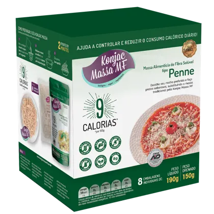
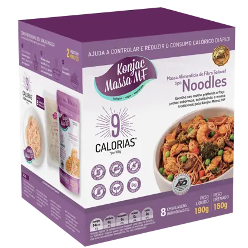
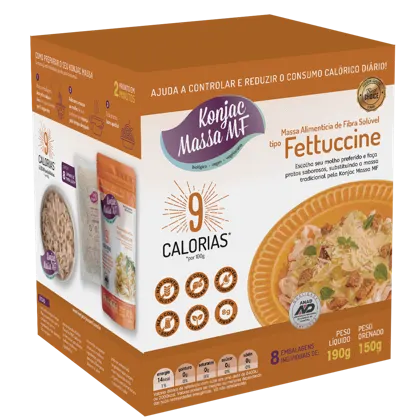
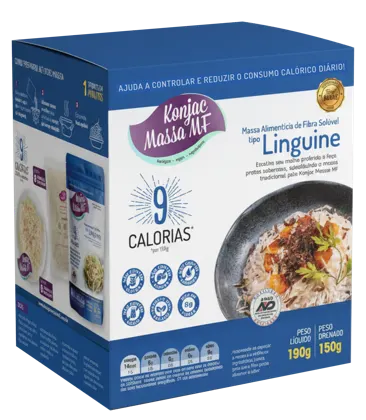
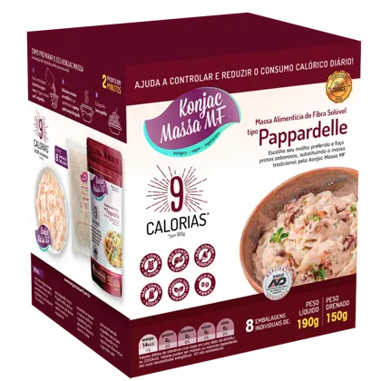

Cada corte tem cor própria na embalagem. Em vídeo dedicado a um corte, o acento de lettering usa a cor do corte; nos demais, o roxo Konjac. Box com 8 embalagens individuais de 190g (150g drenado).

Penne#004c28

Noodles#63295f

Fettuccine#b8682a

Linguine#174275

Pappardelle#5f0923
Arquitetura de linhas: comunicar Low Carb (menos calorias e carboidratos) separada da Proteica (mais proteína e saciedade), com capas, cores e selos distintos.